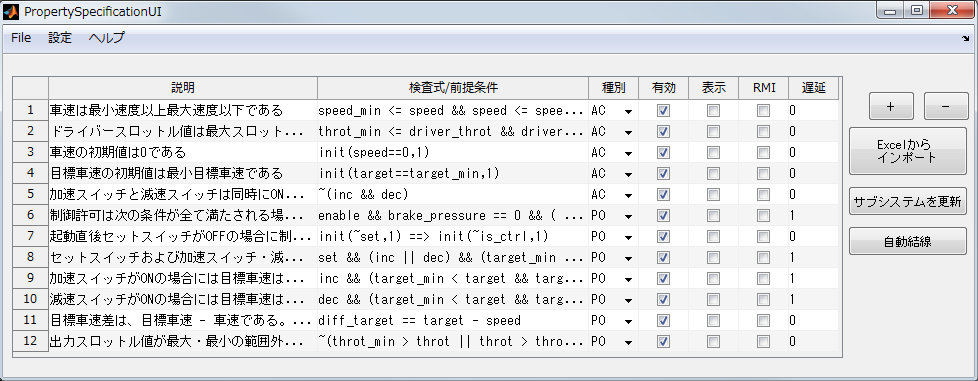
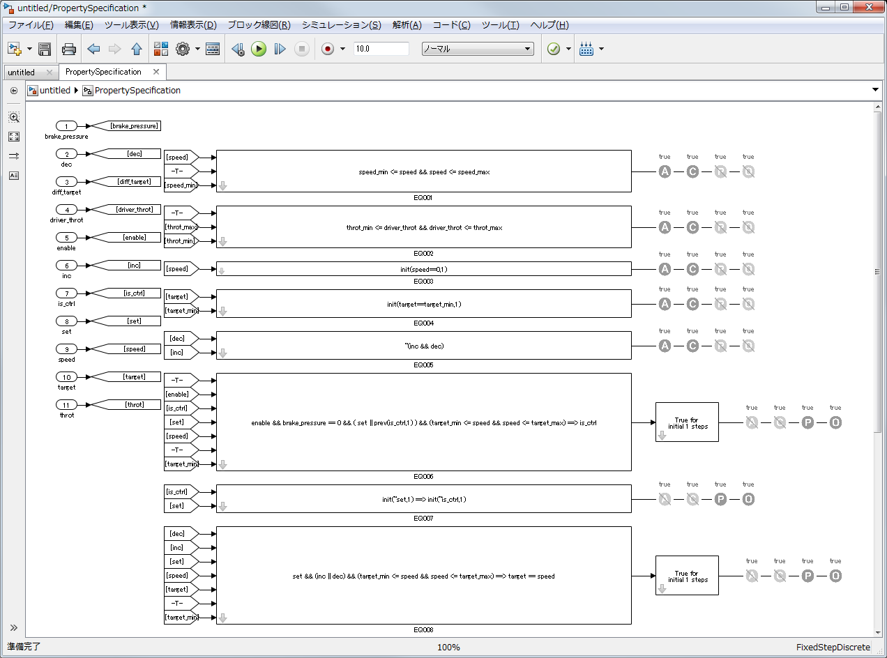
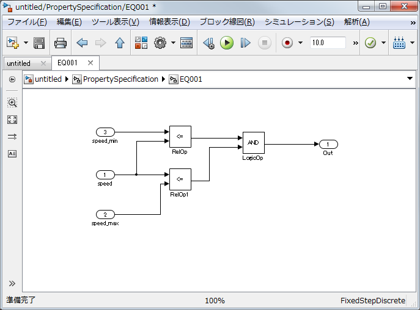

このツールは、Simulink Design Veirifierのプロパティ検証機能において 制御モデルの満たすべき検査式の記述を容易にするツールです。 GUI上に検査式を記述することで、自動的に等価なモデルを作成します。 検査式をExcelシートに記述することで、これを自動的に取り込み 等価なモデルへ変換することも可能です。



Published with MATLAB® 7.11.2